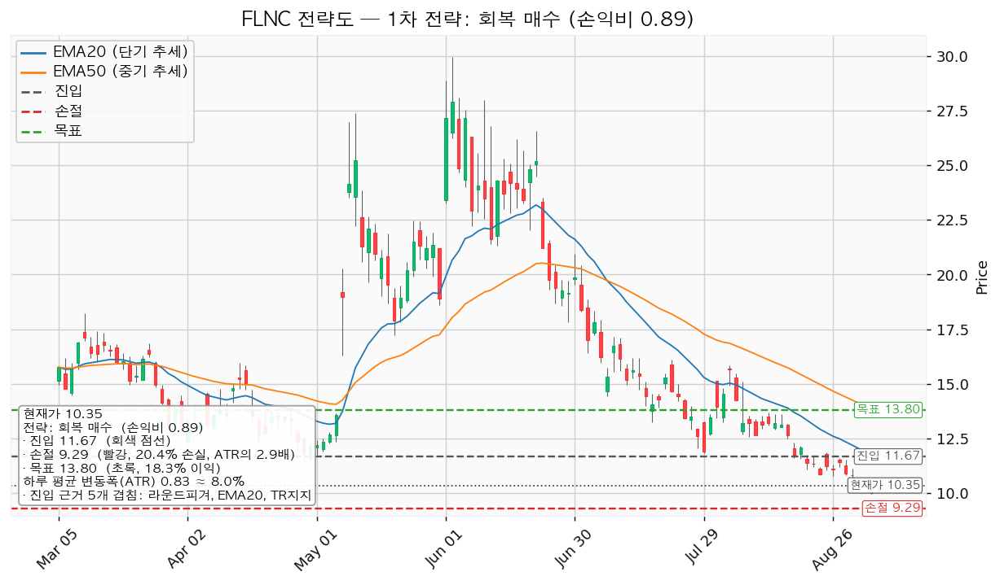
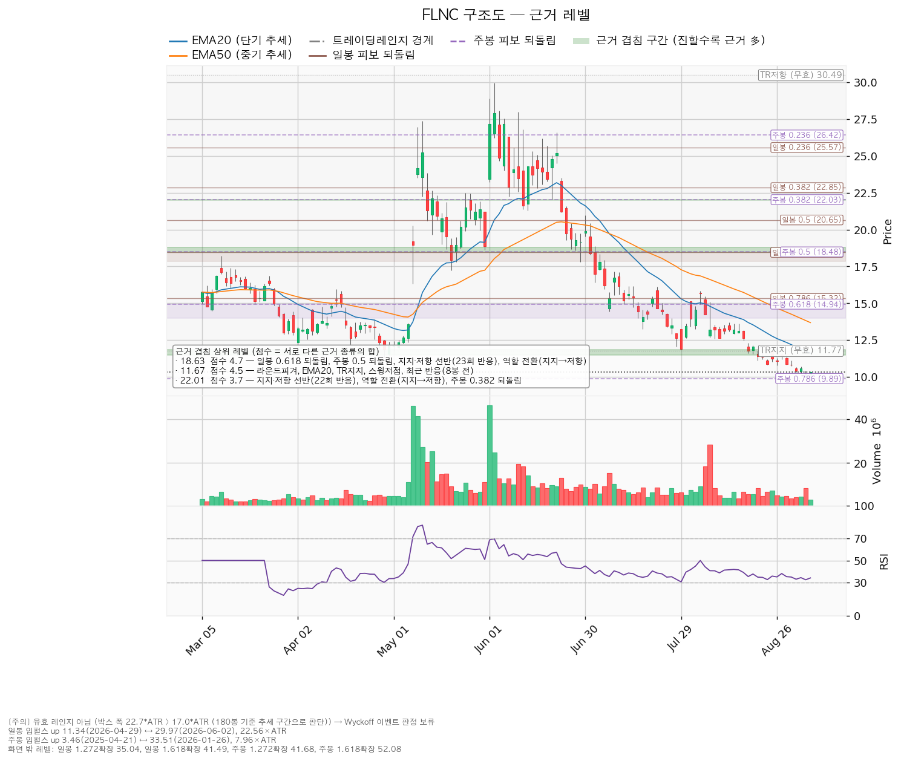
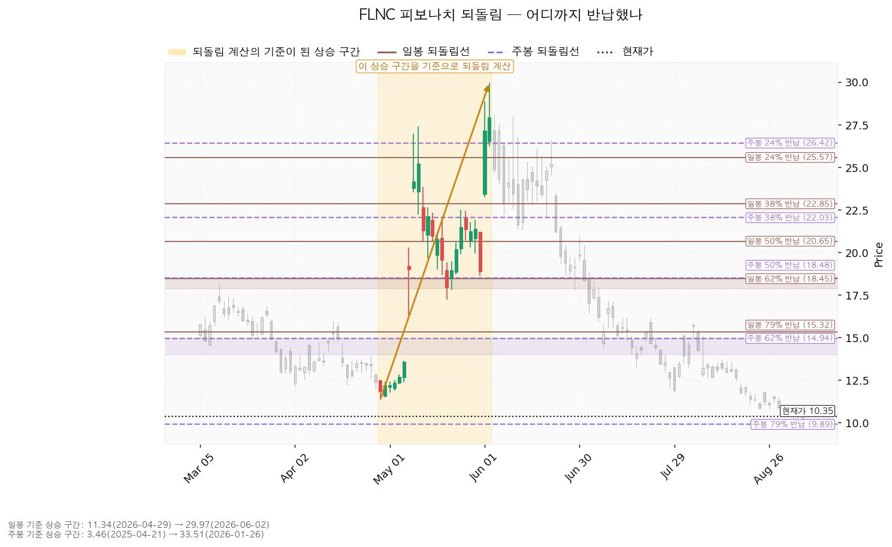
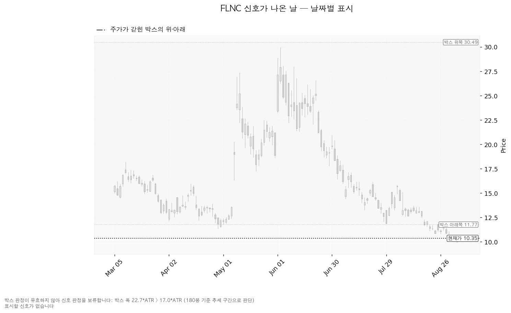

플루언스 에너지(FLNC)는 전력망·발전소에 들어가는 대형 배터리 에너지저장장치(ESS)와 이를 운영·입찰하는 소프트웨어, 유지보수 서비스를 공급하는 미국 기업입니다. AES와 지멘스가 함께 세웠습니다.
| 구분 | 가격 | 판정 방식 | 현재가 대비 | 상태 |
|---|---|---|---|---|
| 회복선(진입 조건) | 11.67달러 | 일봉 종가로 회복한 뒤 되돌림에서 지지되는지 | +12.8% (하루 평균 변동폭의 1.60배) | 회복 대기 — 다만 손익비 미달로 이번엔 진입하지 않음 |
| 집행 손절 | 9.29달러 | 도달 시 즉시 청산 — 진입한 경우에만 유효하며, 미진입 상태에서는 아무 의미가 없습니다 | -10.2% (하루 평균 변동폭의 1.28배) | 작동하지 않음(미진입) |
| 관망 종료 기준 | 9.50달러 | 일봉 종가가 아래로 마감 / 또는 2026-11-24 실적 | -8.2% (하루 평균 변동폭의 1.03배) | 유지 중 |
| 확인선 | 18.63달러 | 일봉 종가 돌파 후 되돌림에서 지지 확인 | +80.0% (하루 평균 변동폭의 10.03배) | 미돌파 |
| 폐기선(구조) | 11.67달러 | 이탈 후 3거래일 내 회복 실패(또는 그 전에 10.84달러 아래 종가 마감) + 반등에서 저항으로 확인 | +12.8% (하루 평균 변동폭의 1.60배, 현재가 위) | 이미 이탈 — 회복 여부 확인 중 |
이 표에서 회복선과 폐기선이 같은 11.67달러인 것은 오류가 아닙니다. 지금 가격이 그 아래에 있기 때문에 같은 가격이 위로 되찾으면 진입 조건이고, 되찾지 못한 채 반등이 그 자리에서 막히면 폐기 조건이 됩니다. 하나의 갈림길입니다.
확인선 18.63달러는 현재가에서 하루 평균 변동폭의 10배나 위에 있어, 지금 국면에서는 실행 기준이 아니라 상승 전환이 완성됐다고 인정할 먼 지점으로만 씁니다. 박스 상단 30.49달러는 그보다 더 위의 맥락일 뿐입니다.
| 항목 | 값 |
|---|---|
| 현재가 | 10.35달러 |
| EMA20 / EMA50(20일·50일 지수이동평균) | 11.59달러 / 13.68달러 — 둘 다 현재가 위 |
| RSI(14) (14일 상대강도, 50이 중립) | 34.1 — 약세이나 과매도선(30) 위 |
| ATR(Average True Range, 하루 평균 변동폭) | 0.83달러 (주가의 7.98%) |
| 국면 | 하락·중립 — 신규 롱 관망 |
| 횡보 박스 | 유효한 박스가 아닙니다 |
횡보 박스로 볼 수 없습니다 — Wyckoff 판정은 보류합니다. 엔진은 40·90·180거래일 세 창을 모두 시험했지만 어느 것도 박스 조건을 채우지 못했습니다(조회한 전체 일봉은 754개).
| 시험한 창 | 가격이 안에 머문 비율 | 방향성 | 폭(하루 변동폭 배수) | 판정 |
|---|---|---|---|---|
| 40거래일 | 52.5% | 1.213 | 3.23배 | 박스 아님 |
| 90거래일 | 78.9% | 0.502 | 19.25배 | 박스 아님 |
| 180거래일 | 90.0% | 0.296 | 22.67배 | 박스 아님 |
180거래일 창은 가격이 90%나 안에 머물렀지만 폭이 하루 변동폭의 22.67배로 지나치게 넓습니다(기준은 17배). 즉 이 사각형은 옆으로 누운 박스가 아니라 아래로 흐른 추세 구간입니다. 그래서 이번 리포트에는 매집·분산을 가르는 Wyckoff 국면 판정이 없고, 회복선·확인선도 박스 경계가 아니라 참고용 구조선입니다. 국면 후보는 하락 진행(markdown)이며, 이는 이동평균 배열만 반영한 값입니다.
이 구간으로 아래에서 올라왔습니다. 직전 구간은 3.67~23.66달러의 추세·확장 구간이었고 위로 뚫고 올라온 뒤 지금 자리로 되밀렸습니다. 위에서 내려온 것이 아니라 아래에서 올라와 되돌린 모양이므로, 재축적일 수도 분산일 수도 있습니다. 갈리는 것은 안쪽에서 일어난 일입니다.
안쪽 관측치 — 중립이며, 매집이라 부를 근거가 없습니다.
| 지지 테스트 | 저가 | 그날 거래량(평소 대비) |
|---|---|---|
| 2026-04-02 | 12.12달러 | 1.02배 |
| 2026-04-29 | 11.34달러 | 1.08배 |
| 2026-07-08 | 14.42달러 | 1.43배 |
| 2026-07-17 | 13.23달러 | 0.98배 |
| 2026-07-29 | 11.84달러 | 0.86배 |
| 2026-09-03 | 9.95달러 | 1.49배 |
지지 테스트 거래량은 줄지 않고 혼조이며, 저점은 절상이 아니라 절하입니다(14.42 → 13.23 → 11.84 → 9.95달러). 가장 최근인 9월 3일 테스트는 평소의 1.49배 거래량으로 신저가를 만들었습니다 — 아래에서 물량이 소진되는 모습이 아닙니다. 상승봉과 하락봉의 거래량비는 1.11로 미세하게 매수 쪽이지만, 저점 절하를 상쇄할 만한 숫자가 아닙니다. 종합 판정은 중립입니다.
이번 분석에서 산출된 셋업은 `reclaim_long`(회복 확인 매수) 한 개입니다. 현재 국면이 하락·중립이라 되돌림 매수·돌파 매수는 나오지 않았고, 지지 확인 매수도 나오지 않았습니다 — 유효한 박스가 없는 데다 안쪽 판정이 매집 우위가 아닌 중립이며, 현재가 바로 아래에 여러 번 지켜진 지지 가격대도 없기 때문입니다. 셋업이 하나뿐이므로 대표 셋업 선택의 트레이드오프는 없습니다.
대표 셋업 선정 사유: *"손익비 0.89 × 구조 증명도(회복 확인형) × 근거 겹침 4.5점으로 선정. 저항을 종가로 회복한 뒤에만 진입한다 — 진입가는 불리하나 구조가 먼저 증명된다."*
| 항목 | 값 |
|---|---|
| 셋업 | reclaim_long (회복 확인 매수) — 회복 확인형(구조 증명도 1.0, 가장 높은 등급) |
| 엣지의 종류 | 모멘텀 — "저항을 종가로 되찾으면 그 방향이 이어진다"는 전제 |
| 성격 | 자주 틀리고 소수가 크게 맞는 유형입니다. 승률을 기대하는 셋업이 아닙니다(이 유형의 일반적 성격이며, 이 엔진에서 측정한 값이 아닙니다) |
| 진입 | 11.67달러 — 일봉 종가로 회복한 뒤 |
| 진입 근거 겹침 | 4.5점 / 11.50~11.84달러 — 근거 5종: 라운드피겨, EMA20, 구간 지지, 스윙저점, 8거래일 전 실제 반응 |
| 손절 | 9.29달러 — 손절 폭 2.38달러 = 하루 평균 변동폭의 2.88배(진입가 대비 -20.4%) |
| 손절 근거 | 근거 겹침 구간(9.50~9.89달러, 2.1점) 바로 아래. 구간 안쪽이 아니라 그 아래에 둔 값이라 손익비가 그만큼 낮게 나옵니다 |
| 목표 | 13.80달러 |
| 목표 근거 겹침 | 2.7점 / 13.68~13.92달러 — EMA50, 스윙고점, 17거래일 전 반응 |
| 손익비 | 1:0.89 (손절 폭이 하루 평균 변동폭의 2.88배) — 1 미만이므로 패스 |
이 손익비는 손절을 조여서 만든 숫자가 아니라, 구조 그대로의 숫자입니다. 손절 폭이 하루 평균 변동폭의 2.88배로 이미 넉넉하고 위치도 겹침 구간 아래로 밀어낸 구조적 자리이므로, 별도의 구조 손절 기준 손익비가 따로 계산되지 않았습니다. 바꿔 말하면 숫자를 좋게 만들 여지가 없습니다. 진입 11.67달러에서 목표 13.80달러까지는 2.13달러인데 손절까지는 2.38달러이므로, 맞았을 때 버는 것보다 틀렸을 때 잃는 것이 더 큽니다. 이런 조합은 승률이 높아야만 성립하는데, 이 셋업은 성격상 승률을 기대하는 유형이 아닙니다. 그래서 패스입니다.
분할 청산으로 바꿔도 답은 같습니다. 엔진의 분할안은 1차 목표 12.00달러에서 50% 익절(손익비 1:0.14) → 잔여분 손절을 진입가 11.67달러(본전)로 상향 → 2차 목표 13.80달러에서 나머지 50%(손익비 1:0.89)이며, 이때 전 구간 손익비는 1:0.52, 절반 익절 후 본전 손절에 걸리는 최악의 경우는 1:0.07까지 내려갑니다. 어느 계산이든 1을 넘지 못합니다.
비중은 싣지 않습니다. 참고로 1회 매매에서 계좌의 1%를 잃는 한도로 계산하면 손절 폭 20.4%에 대해 포지션은 계좌의 4.9%(한 종목 상한 13% 이내)가 나옵니다만, 손익비가 1 미만인 계획에 자금을 배정하지 않습니다.

| 단계 | 조건 | 의미 | 행동 |
|---|---|---|---|
| ① 관찰 | 일봉 종가가 11.67달러 아래로 마감 | 구조 이탈이 시작된 것이며, 되돌아 올라오면 속임수 하락일 수 있어 아직 무효가 아닙니다 | 신규 진입만 중단. 집행 손절은 그대로 둡니다 |
| ② 경고 | 이탈 후 3거래일 안에 11.67달러를 종가로 회복하지 못함, 또는 그 전에 일봉 종가가 10.84달러 아래로 마감(하루 평균 변동폭의 1배만큼 더 밀림) — 둘 중 먼저 오는 쪽 | 저항 회복 실패 가능성이 우세해집니다 | 잔여 비중 축소. 반등이 나오면 이 가격에서의 반응을 확인합니다 |
| ③ 무효 | 반등이 11.67달러에서 막히고 그 아래로 되밀림(지지가 저항으로 전환) | 셋업 폐기 — 구조 해석이 틀린 것으로 확정 | 포지션 정리 후 새 구조가 만들어질 때까지 관망 |
현재 위치를 분명히 밝힙니다. 종가 10.35달러는 이미 10.84달러 아래이므로 ①과 ②가 모두 지나간 상태이고, 남은 것은 ③뿐입니다. 이것이 이번 결론을 관망으로 두는 구조적 이유입니다. 집행 손절 9.29달러는 이 3단계 판정과 무관하게 별도로 작동하며(진입한 경우에 한합니다), 장중 일시 이탈은 어느 단계에도 해당하지 않습니다.
① 상승 전환
② 횡보 지속 — 부정적인 그림이 아닙니다
③ 시나리오 폐기
현재가 10.35달러 주변의 주요 구간입니다. 점수는 서로 다른 근거의 종류가 몇 개 겹쳤는지를 가중합한 값이며, 같은 종류가 여러 개 붙어도 한 번만 셉니다.
| 가격대 | 겹침 점수 | 근거 | 현재가 대비 |
|---|---|---|---|
| 18.45~18.79달러 | 4.7 | 일봉 0.618 되돌림 + 주봉 0.5 되돌림 + 반복 반응 구간(23회) + 역할 전환(지지→저항) | +80.0% (확인선) |
| 15.13달러 | 2.5 | 주봉 0.618 되돌림 + 일봉 0.786 되돌림 | +46.2% |
| 13.68~13.92달러 | 2.7 | EMA50 + 스윙고점 + 17거래일 전 반응 | +33.3% (목표) |
| 12.57달러 | 1.7 | 스윙저점 + 20거래일 전 반응 | +21.4% |
| 11.50~11.84달러 | 4.5 | 라운드피겨 + EMA20 + 구간 지지 + 스윙저점 + 8거래일 전 반응 | +12.8% (회복선·폐기선) |
| 11.00달러 | 0.6 | 라운드피겨 | +6.3% |
| 10.00달러 | 0.6 | 라운드피겨 | -3.4% |
| 9.50~9.89달러 | 2.1 | 라운드피겨 + 주봉 0.786 되돌림 | -8.2% (관망 종료 기준) |
| 9.00달러 | 0.6 | 라운드피겨 | -13.0% |
현재가는 근거가 거의 없는 빈 구간에 있습니다. 위로 가장 가까운 두꺼운 자리가 11.50~11.84달러(4.5점)이고 아래로는 9.50~9.89달러(2.1점)인데, 그 사이 10.00·11.00달러는 라운드피겨 하나뿐인 0.6점짜리입니다. 아래로 밀릴 때 가격이 반응할 만한 자리가 사이에 거의 없다는 뜻이며, 이것이 지금 매수를 서두르지 않는 또 하나의 이유입니다. 9.50달러 아래로는 다음 근거가 9.00달러 라운드피겨 하나뿐입니다.

일봉 되돌림은 11.34달러(2026-04-29) → 29.97달러(2026-06-02) 상승 구간을 기준으로 계산됐습니다(구간 폭이 하루 변동폭의 22.56배로 충분히 큽니다).
| 되돌림 | 가격 | 현재 상태 |
|---|---|---|
| 0.236 (24% 반납) | 25.57달러 | 이미 아래로 통과 |
| 0.382 (38% 반납) | 22.85달러 | 이미 아래로 통과 |
| 0.5 (50% 반납) | 20.65달러 | 이미 아래로 통과 |
| 0.618 (62% 반납) | 18.45달러 | 이미 아래로 통과 — 확인선과 겹침 |
| 0.786 (79% 반납) | 15.32달러 | 이미 아래로 통과 |
일봉 기준으로는 되돌림선이 모두 무너졌습니다. 현재가 10.35달러는 상승이 시작된 자리(11.34달러)보다도 아래이므로, 4월 말부터 6월 초까지의 상승분을 100% 넘게 반납한 상태입니다. 그래서 일봉 되돌림은 지금 지지 근거가 되지 못하고, 위쪽 저항 위치를 알려주는 용도로만 남았습니다.
주봉 되돌림은 3.46달러(2025-04-21) → 33.51달러(2026-01-26) 상승 구간 기준입니다. 여기서 79% 반납선은 9.89달러이고, 현재가 10.35달러는 그 바로 위입니다. 더 큰 시계에서 마지막으로 남은 되돌림선 위에 아슬아슬하게 서 있는 자리이며, 관망 종료 기준을 9.50달러(이 구간의 바닥)로 잡은 근거가 여기입니다.

이번 조회에서 산출된 신호일이 없습니다. 앞서 적은 대로 유효한 박스로 판정되지 않아 Wyckoff 이벤트(속임수 하락·상단 속임수·강세 신호·약세 신호)가 계산되지 않았기 때문입니다. "신호가 없다"가 아니라 "판정을 보류했다"입니다 — 이 둘을 혼동하지 마십시오. 아래 차트에도 표시할 신호일이 없습니다.

| 항목 | 값 |
|---|---|
| 애널리스트 | 18명 · 투자의견 hold |
| 목표주가 | 평균 16.00달러 / 최저 8.00달러 / 최고 24.00달러 |
| 현재가의 위치 | 최저 목표보다 +29.4% 위, 평균 목표보다 -35.3% 아래 |
| 후행 PER | 계산되지 않습니다 — 후행 EPS가 -0.60달러로 적자이기 때문입니다 |
| 선행 PER | 내년 추정이익 기준 75.2배 |
| 추정이익(EPS) | 올해 -0.34달러(범위 -0.47~-0.20) / 내년 +0.14달러(범위 -0.17~+0.41) |
| 추정치 방향(최근 90일) | 올해 적자 폭이 -0.13달러에서 -0.34달러로 확대 / 내년 이익은 -25.1% 하향 |
(a) 배수는 둘 다 봐야 합니다. 후행 PER은 회사가 적자여서 존재하지 않습니다(후행 EPS -0.60달러). 남는 것은 선행 배수 하나이고, 그 값은 내년 추정이익 0.14달러 기준 75.2배입니다. 즉 지금 가격은 아직 나오지 않은 흑자 전환을 이미 상당 부분 반영한 값이며, 주가가 고점 대비 크게 내렸다는 사실만으로 싸졌다고 말할 수 없습니다. 이익 성장률이 크게 나오는 것(올해 적자 → 내년 흑자)은 기저가 적자이기 때문이지 성장 속도의 증거가 아닙니다.
(b) 목표주가는 분포로 봅니다. 평균 16.00달러만 인용하면 오해를 부릅니다. 18명의 목표는 8.00달러에서 24.00달러까지 3배 차이로 벌어져 있습니다. 현재가 10.35달러는 최저 목표 8.00달러보다는 +29.4% 위에 있어 전원의 목표 아래로 떨어진 상태는 아니지만, 분포의 아래쪽 3분의 1에 자리합니다. 투자의견도 매수가 아니라 보유(hold)입니다.
(c) 하락의 정체 — 배수 수축이 아니라 이익 추정치 자체가 내려갔습니다. 이 구분이 이번 리포트에서 가장 중요합니다. 최근 90일 동안 올해 추정 EPS는 -0.13달러에서 -0.34달러로 적자가 깊어졌고, 내년 추정 EPS도 0.18달러에서 0.14달러로 -25.1% 낮아졌습니다. 가격만 내리고 이익 전망은 유지된 경우(배수 수축)라면 되돌림 매수의 근거가 되지만, 여기서는 추정치가 가격과 같은 방향으로 내려갔습니다. 그래서 이번 하락은 시장이 매기는 배수만 줄어든 것으로 볼 수 없고, 사업 전망이 함께 낮아진 것으로 읽습니다. 저점 절하가 이어지는 가격 움직임과 같은 방향을 가리킵니다.
(d) 현금흐름 — 영업 단계에서 현금이 나가고 있습니다. 영업활동 현금흐름은 -1억 79만 달러로 적자입니다. 설비투자가 앞서서 생긴 적자가 아니라 영업 그 자체에서 현금이 유출되는 유형이며, 이쪽이 더 무겁습니다. 설비투자는 2,980만 달러로 직전 1,898만 달러 대비 +57.0% 늘었습니다. 한 가지 표면화해 둘 것이 있습니다 — 이번 조회에서 잉여현금흐름은 +242만 달러(흑자)로 돌아왔는데, 영업활동 현금흐름이 적자인 상태에서 잉여현금흐름만 흑자가 나오는 것은 성립하지 않는 조합입니다. 두 값이 서로 다른 기간에서 집계됐을 가능성이 높습니다. 어느 쪽이 맞는지 이 데이터만으로는 판정할 수 없으므로, 잉여현금흐름 흑자를 근거로 쓰지 않고 영업 현금 유출 쪽만 반영했습니다. 11월 실적에서 확인할 항목으로 겁니다.
(e) 상승 여력의 분해 — 전부 배수 확장입니다. 평균 목표 16.00달러는 현재가 대비 +54.6%입니다. 이를 나눠 보면, 그 목표가 내년 추정이익 0.14달러에 함의하는 배수는 116.3배이고 현재가가 같은 이익에 매기는 배수는 75.2배입니다. 두 배수가 같은 이익 숫자를 쓰고 있으므로, 평균 목표까지의 +54.6%는 이익 증가에서 나오는 몫이 없고 100% 배수 확장에 기대고 있습니다. 이미 75배인 배수가 116배로 더 벌어져야 한다는 뜻이며, 이 조건은 가볍지 않습니다.
주도주 여부 — 아닙니다. 이익 추정치가 90일간 양방향 모두 하향됐고, 투자의견은 보유이며, 가격은 EMA20·EMA50 아래에서 저점을 낮추고 있습니다. 실적 층위와 가격 층위가 같은 방향으로 부정적이라 이 둘이 서로를 상쇄해 주지 않습니다. 다만 시계는 구분합니다 — 컨센서스는 12개월, 이번 셋업은 수 주입니다. 이번 리포트의 답은 진입·손절·목표로 내며, 그 답은 진입하지 않는 것입니다.
| 날짜 | 이벤트 | 볼 것 |
|---|---|---|
| 2026-11-24 | 분기 실적 발표 | ① 올해 EPS 추정 -0.34달러(범위 -0.47~-0.20) 대비 실제치 ② 발표 후 내년 추정치 +0.14달러가 더 내려가는지 멈추는지 ③ 영업활동 현금흐름이 -1억 79만 달러에서 개선되는지 ④ 잉여현금흐름 수치가 영업현금흐름과 앞뒤가 맞게 나오는지 |
가격 기준 외에 날짜가 정해진 확인 이벤트는 위 하나입니다. 그 사이의 판단은 전적으로 위 핵심 가격 표로 합니다.
폐기선 11.67달러는 현재가에서 하루 평균 변동폭의 1.60배 거리이므로 실무상 쓸 수 있는 거리이지만, 이미 이탈한 뒤라 앞으로의 판단 기준으로는 힘이 약합니다. 미진입 상태에서 실제로 보실 가격은 관망 종료 기준 9.50달러입니다. 여기에 더해 가격이 아닌 무효화 조건을 겁니다.